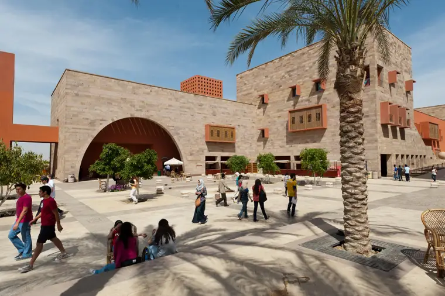

الجامعة الأمريكية بالقاهرة

الجامعة الأمريكية بالقاهرة (بالإنجليزية: American University in Cairo) هي جامعة مصرية، مستقلة، غير هادفة للربح، ومتعددة الثقافات والتخصصات، وتعتبر الجامعة واحدة من أكبر الجامعات التي توفر تعليم متميز باللغة الإنجليزية. تأسست في عام 1919 في ميدان التحرير في وسط العاصمة المصرية، القاهرة، وأصبح مقرها الحالي بالقاهرة الجديدة، ويوجد لها مجلس للأوصياء وبعض المكاتب الإدارية في نيويورك. كان الرئيس الأول لها هو تشارلز واتسون الذي ظل رئيساً لها لمدة 25 عاماً، والذي ولد بالقاهرة عام 1873. تقدم الجامعة تعليماً قائماً على النهج الليبرالي المعتمد على التفكير النقدي والتحليلي لطلاب البكالوريوس والدراسات العليا، وبرامج مهنية، بالإضافة إلى برامج التعليم المستمر.
يتوافد طلاب الجامعة من أكثر من 50 دولة حول العالم. ويأتي أعضاء هيئة تدريس الجامعة، والأساتذة غير المتفرغين، والأساتذة الزائرين، وتتضمن القائمة أكاديميين، ومهنيين، ودبلوماسيين، وصحفيين، وكُتاب وآخرين من الولايات المتحدة الأمريكية ومصر وبلدان أخرى من سائر أنحاء العالم، حيث أن تعدد الثقافات يضمن إثراء التجربة التعليمية للطلاب ويتيح الفرص للتواصل بين مختلف الخلفيات الثقافية.
تعد جميع البرامج الدراسية بالجامعة معتمدة من قبل لجنة الدول المتوسطة للتعليم العالي، والهيئة المصرية العامة لتأكيد الجودة واعتماد التعليم، ومن جهات الاعتماد الأمريكية، بالإضافة إلى أن البرامج الأكاديمية التي تقدمها الجامعة معتمدة اعتماداً خاصاً من منظمات مهنية أخرى معترف بها عالمياً.
تاريخ الجامعة
أسس واتسون الجامعة الأمريكية بالقاهرة في عام 1919 لخدمة التعليم والمجتمع في منطقة الشرق الأوسط. لعب واتسون، الرئيس المؤسس للجامعة، دوراً كبيراً في رسم الملامح الأولى للأعوام السبع والعشرين الأولى من تاريخ الجامعة، حيث كان يهدف إلى إنشاء جامعة توفر تعليماً للدراسات التأسيسية باللغة الإنجليزية يسهم في بناء قادة المستقبل في مصر والمنطقة، وذلك من خلال غرس قيم الانضباط إلى جانب تنمية الشخصية القوية والمهارات الفكرية.
أنشئت الجامعة لتكون مدرسة ثانوية وجامعة في نفس الوقت. تم افتتاح المدرسة الثانوية في أكتوبر 1920، وشملت الدراسة آنذاك فصلين دراسيين يعادلان السنتين الأخيرتين من المرحلة الثانوية الأمريكية وتضمنت 142 طالباً. وتم منح أول شهادات للتخرج بدرجة جامعية متوسطة لعشرين طالب في عام 1923.
وشهد عام 1928 قبول أوراق التحاق أول طالبة بالجامعة حيث كانت الدراسة قبل ذلك الحين مقصورة على الذكور فقط. وفي العام نفسه، تم تخريج أول دفعة لطلاب بكالوريوس الآداب والعلوم، بينما تم إطلاق درجة الماجستير لأول مرة في عام 1950.
اقتصرت مجالات الدراسة بالجامعة في البداية على العلوم والفنون فضلا عن علوم التربية. وفي عام 1921، تم إنشاء كلية الدراسات الشرقية، ثم قسم الامتداد العلمي عام 1924 والذي أطلق عليه لاحقاً قسم الخدمة العامة، ثم تغير اسمه إلى مركز تعليم الكبار والتعليم المستمر. وفي عام 1951، تم إغلاق قسم المدرسة الثانوية والتي كانت معروفة باسم مدرسة لينكولن.
وفي عام 1956، تم إدراج كلية الدراسات الشرقية تحت كلية الآداب والعلوم باعتبارها مركزاً للدراسات العربية، كما تم إنشاء معهد اللغة الإنجليزية في نفس العام. وفي عام 1961، تم إيقاف كلاً من كلية التربية والشهادات الخاصة لشعبة الخدمات العامة، حيث تم دمج جميع الدرجات الجامعية تحت مظلة أكاديمية واحدة وهي كلية الآداب والعلوم، وتم توسيع المناهج الدراسية لتشمل علم الاجتماع، وعلم الأنثروبولوجيا، والعلوم السياسية، والاقتصاد، كما تم تطوير مناهج العلوم الطبيعية، وتم إنشاء وحدتين للبحوث التطبيقية وهما مركز البحوث الاجتماعية في عام 1953 ومركز تنمية الصحراء في عام 1979 لدعم التنمية المستدامة في المناطق الصحراوية المستصلحة في مصر، ويُكمل إرثه الان معه البحوث للبيئة المستدامة. ويعتبر إطلاق البرامج الأكاديمية العلمية أحد العلامات الهامة في تاريخ الجامعة حيث تم إنشاء أقسام الهندسة، وعلوم الكمبيوتر، والصحافة والإعلام، وعلوم الإدارة لنيل شهادات البكالوريوس والماجستير.
وفي عام 1960، التحق بالجامعة حوالي 400 طالب، وبحلول عام 1969 تضاعف عدد الطلاب الملتحقين بالجامعة ثلاثة أضعاف ليصبح عددهم أكثر من 1300 طالب وطالبة، من بينهم 450 من طلاب الدراسات العليا. واستمرت أعداد الطلاب الملتحقين بالبرنامج الأكاديمي في تزايد حتى وصلت إلى أكثر من 5000 طالب وطالبة، بالإضافة إلى 1000 من طلاب الدراسات العليا.
كما عملت الجامعة على التوسع بقسم تعليم الكبار، الذي يخدم الآن ما يقرب من 40,000 من الطلاب الملتحقين بدراسة خارج نظام الساعات الدراسية، والبرامج التدريبية التي تقدمها كلية التعليم المستمر، المعروفة سابقاً بمركز تعليم الكبار والتعليم المستمر.
مكانة الجامعة عالميا
حصلت الجامعة الأمريكية في القاهرة على المرتبة 411 على مستوى العالم، والمرتبة 9 على مستوى الوطن العربي بحسب تصنيف الـ QS للجامعات لعام 2020. وهي جامعة بحثية خاصّة تقدّم برامجها باللغة الإنجليزية. تنتهج الجامعة في تدريسها أسلوب الفنون الليبرالية على الطريقة الأمريكية، وتعدّ موطنًا لأكبر مجموعة مكتبات باللغة الإنجليزية في مصر. كما يبلغ إجمالي عدد الطلبة المسجّلين حاليًا 6453 طالبًا من أكثر من 50 دولة مختلفة. هذا وتقدّم الجامعة الأمريكية في القاهرة 36 برنامج بكالوريوس و44 برنامج ماجستير بالإضافة إلى برنامجي دكتوراه. وتعدّ مثالاً حيًّا للتميّز والتنوع والتعلّم المستمر وقيم المسؤولية الاجتماعية والنزاهة.
الأكاديميات
الكليات
يقدم الحرمان الجامعيان معاً أكثر من 37 برنامج لدراسات البكالوريوس و44 برنامج للدراسات العليا وبرنامجان للدكتوراة، وذلك من خلال 5 كليات. الكليات التي تقدم دراسات البكالوريوس والدراسات العليا:
كلية إدارة الأعمال
كلية العلوم الإنسانية والاجتماعية
كلية الشئون الدولية والسياسات العامة
كلية العلوم والهندسة
كلية التعليم المستمر
مراكز الأبحاث
مركز إتاحة المعرفة من أجل التنمية
منتدى الجامعة الأمريكية بالقاهرة
مركز دراسات الهجرة واللاجئين
مركز دراسات الترجمة
معهد سينثيا نيلسون لدراسات المرأة والنوع
مركز توثيق النشاط الاقتصادي
مركز الخازندار للبحوث والنماذج التجارية
مركز جون د. جرهارت للعطاء الاجتماعي والمشاركة المدنية والمسئولية الاجتماعية
مركز دراسات الشرق الأوسط
مركز الأمير الوليد بن طلال بن عبد العزيز آل سعود للدراسات والبحوث الأمريكية
معهد البحوث للبيئة المستدامة
مركز البحوث الاجتماعية
مركز يوسف جميل لأبحاث العلوم والتكنولوجيا
مركز كمال أدهم للصحافة الرقمية والتليفزيونية
مركز التنمية المستدامة
لينك الصفحة الرئيسية للجامعة
لينك صفحة الفيسبوك
لتقييم الجامعة
لمشاهدة تقييمات الجامعات